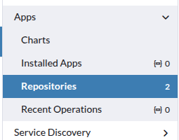
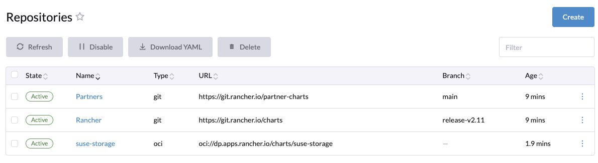
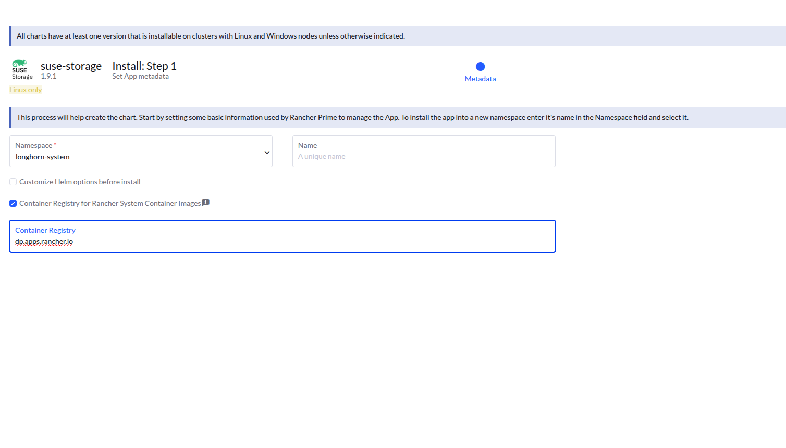
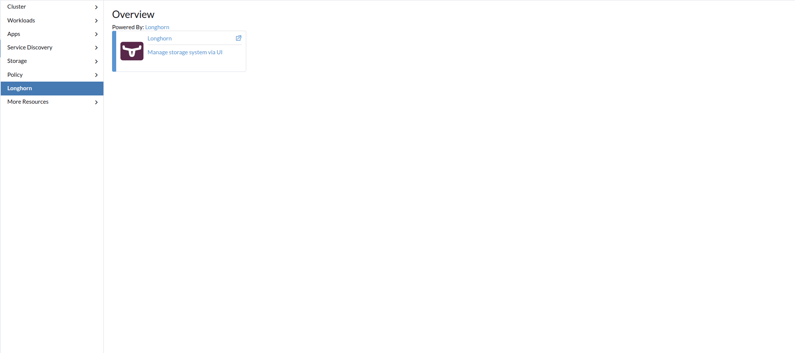

|
Este documento ha sido traducido utilizando tecnología de traducción automática. Si bien nos esforzamos por proporcionar traducciones precisas, no ofrecemos garantías sobre la integridad, precisión o confiabilidad del contenido traducido. En caso de discrepancia, la versión original en inglés prevalecerá y constituirá el texto autorizado. |
|
Esta es documentación inédita para SUSE® Storage 1.12 (Dev). |
Instalar SUSE Storage utilizando Rancher
Una ventaja de instalar SUSE Storage a través del Mercado de Aplicaciones de Rancher es que Rancher proporciona autenticación a la interfaz de usuario de SUSE Storage.
Si hay una nueva versión de SUSE Storage disponible, verás un signo de Upgrade Available en la pantalla de Apps Marketplace. Puedes hacer clic en el botón Upgrade para actualizar la versión de Longhorn Manager. Consulta más sobre la actualización aquí.
Requisitos previos
Cada nodo en el clúster de Kubernetes donde se instala SUSE Storage debe cumplir con estos requisitos.
La Herramienta de Línea de Comandos de Longhorn se puede utilizar para comprobar el entorno de SUSE Storage en busca de posibles problemas.
Autenticación
Para crear el espacio de nombres longhorn-system, ejecuta el siguiente comando:
kubectl create namespace longhorn-systemSigue la documentación de autenticación de Kubernetes para crear un secreto en el espacio de nombres longhorn-system.
kubectl create secret docker-registry application-collection \
--docker-server=dp.apps.rancher.io \
--namespace=longhorn-system \
--docker-username=<your-username-or-service-account-username> \
--docker-password=<access-token-or-service-account-secret>Instalación
Para instalar SUSE Storage desde la Colección de Aplicaciones de SUSE en lugar de los gráficos comunitarios predeterminados de Longhorn de Rancher, configura un nuevo repositorio en Rancher que apunte al repositorio de gráficos de la Colección de Aplicaciones de SUSE para SUSE Storage. Consulta esta guía para obtener detalles sobre el proceso y cómo autenticar el repositorio de gráficos.
Los siguientes pasos proporcionan un ejemplo en Rancher. Para obtener instrucciones detalladas, consulta la documentación de Rancher.
-
En Rancher, ve a Aplicaciones > Repositorios.

-
Haz clic en el botón Crear.
-
Elige Repositorio OCI en los botones de opción e introduce la ruta del registro de gráficos OCI
oci://dp.apps.rancher.io/charts/suse-storagejunto con la autenticación, luego haz clic en Crear.
El repositorio debería añadirse con éxito.

-
En Aplicaciones > Gráfico, puedes ver
suse-storagedisponible para instalación.
-
Haga clic en Instalar.

-
Opcional: Selecciona el proyecto donde deseas instalar SUSE Storage.
-
Opcional: Personaliza los ajustes por defecto.

Si estás utilizando SUSE Rancher Prime, es obligatorio habilitar Registro de contenedores para imágenes del sistema Rancher y establecer el valor en
dp.apps.rancher.iopara asegurar que las imágenes se extraigan del registro correcto.
-
Haga clic en Siguiente. En el editor yaml, añade el valor
application-collectionen el campoglobal.imagePullSecrets.
-
Haz clic en Siguiente. SUSE Storage se instalará en el espacio de nombres
longhorn-system.
-
Haz clic en el icono de la app SUSE Storage para navegar al panel de control SUSE Storage.

Una vez que SUSE Storage esté instalado, puedes acceder a la interfaz de usuario SUSE Storage navegando a la opción Longhorn en el panel izquierdo de Rancher.
Acceder a la interfaz de usuario con la directiva de red habilitada
Ten en cuenta que cuando la directiva de red está habilitada, el acceso a la interfaz de usuario desde Rancher puede estar restringido.
Rancher interactúa con la interfaz de usuario SUSE Storage a través de un servicio llamado remotedialer, que facilita las conexiones entre Rancher y los clústeres en sentido descendente que gestiona. Este servicio permite a un agente de usuario acceder al clúster a través de un punto final en el servidor de Rancher. Remotedialer se conecta al servicio de interfaz de usuario SUSE Storage utilizando el servidor API de Kubernetes como proxy.
Sin embargo, cuando la directiva de red está habilitada, el servidor API de Kubernetes puede no ser capaz de alcanzar los pods en diferentes nodos. Esto ocurre porque el servidor API de Kubernetes opera dentro del espacio de nombres de red del host sin una dirección IP dedicada por pod. Si estás utilizando el plugin CNI de Calico, cualquier proceso en el espacio de nombres de red del host (como el servidor API) que se conecte a un pod activa a Calico para encapsular el paquete en IPIP antes de reenviarlo al host remoto. La dirección del túnel se elige como la fuente para asegurar que el host remoto sepa encapsular correctamente los paquetes de retorno.
En otras palabras, para permitir que el proxy funcione con la directiva de red, se debe identificar la IP del túnel de cada nodo y permitirla explícitamente en la directiva de red.
Puedes encontrar la IP del túnel mediante:
$ kubectl get nodes -oyaml | grep "Tunnel"
projectcalico.org/IPv4VXLANTunnelAddr: 10.42.197.0
projectcalico.org/IPv4VXLANTunnelAddr: 10.42.99.0
projectcalico.org/IPv4VXLANTunnelAddr: 10.42.158.0
projectcalico.org/IPv4VXLANTunnelAddr: 10.42.80.0A continuación, permite el tráfico en la directiva de red utilizando la IP del túnel. Es posible que necesites actualizar la directiva de red cada vez que se añadan nuevos nodos al clúster.
apiVersion: networking.k8s.io/v1
kind: NetworkPolicy
metadata:
name: longhorn-ui-frontend
namespace: longhorn-system
spec:
podSelector:
matchLabels:
app: longhorn-ui
policyTypes:
- Ingress
ingress:
- from:
- ipBlock:
cidr: 10.42.197.0/32
- ipBlock:
cidr: 10.42.99.0/32
- ipBlock:
cidr: 10.42.158.0/32
- ipBlock:
cidr: 10.42.80.0/32
ports:
- port: 8000
protocol: TCPOtra forma de resolver el problema es ejecutando los nodos del servidor con egress-selector-mode: cluster. Para más información, consulta Referencia de Configuración del Servidor RKE2 y configuración del Selector de Egreso del Plano de Control K3s.